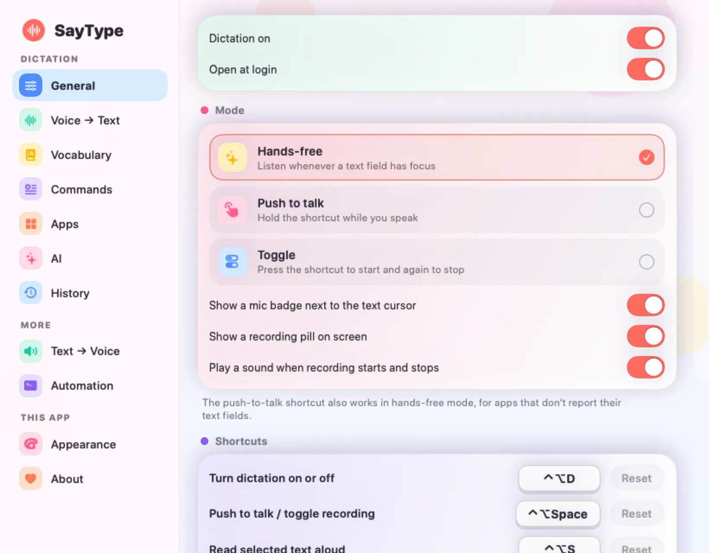
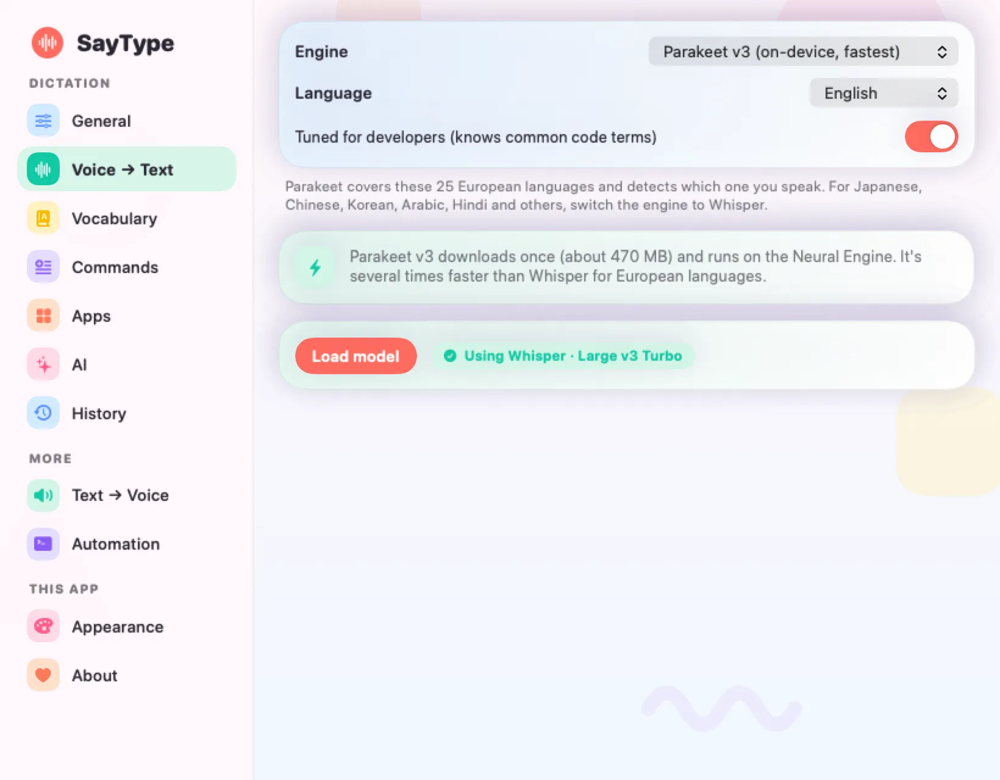
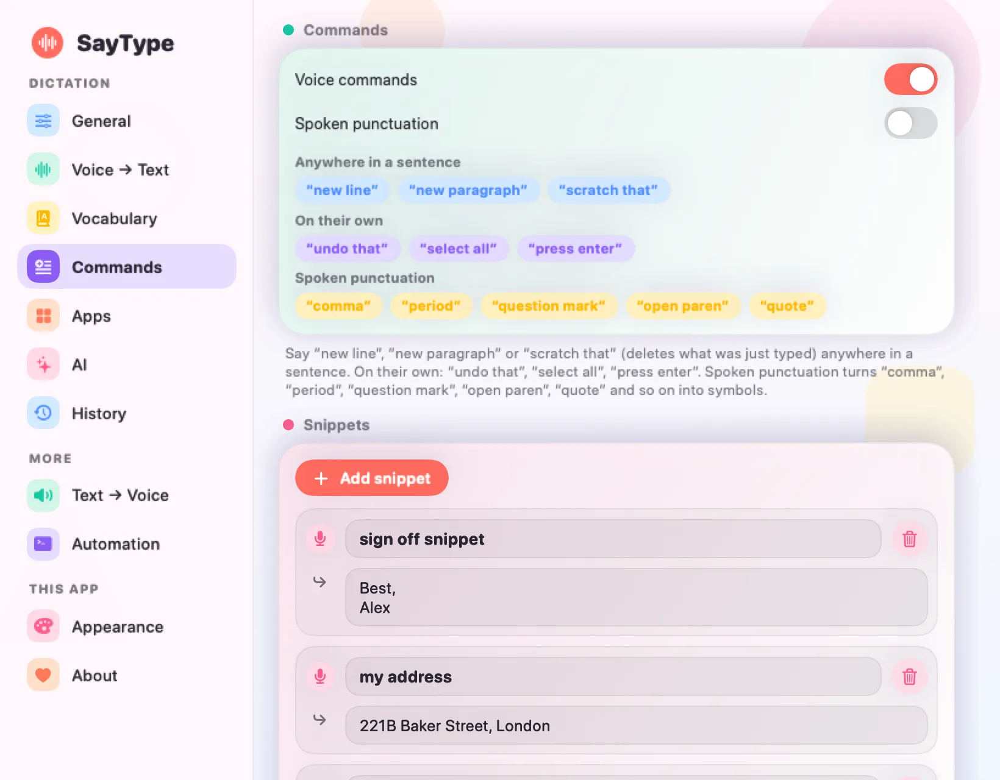
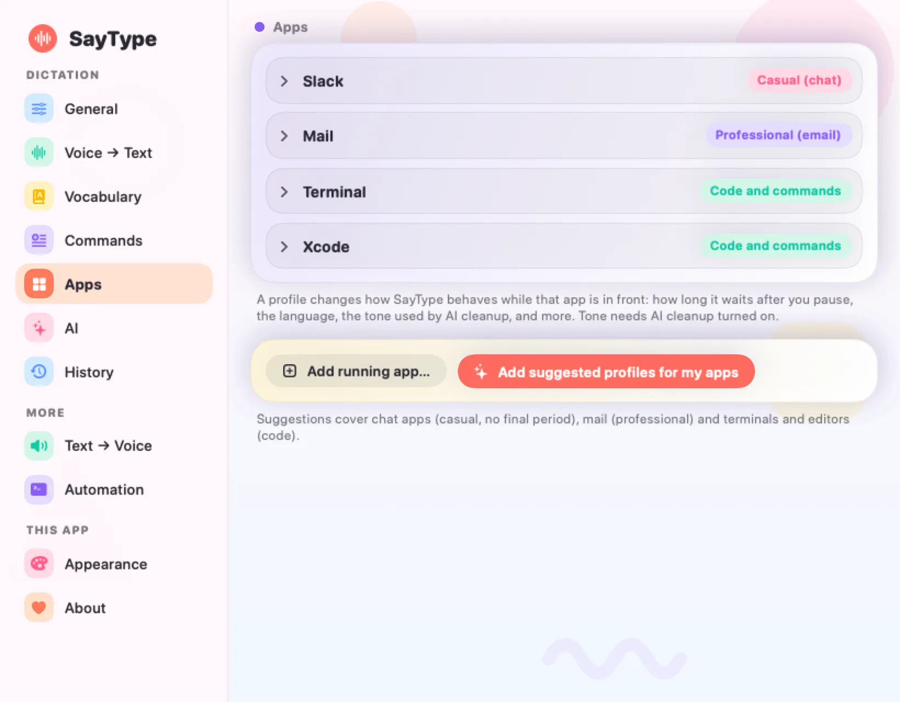
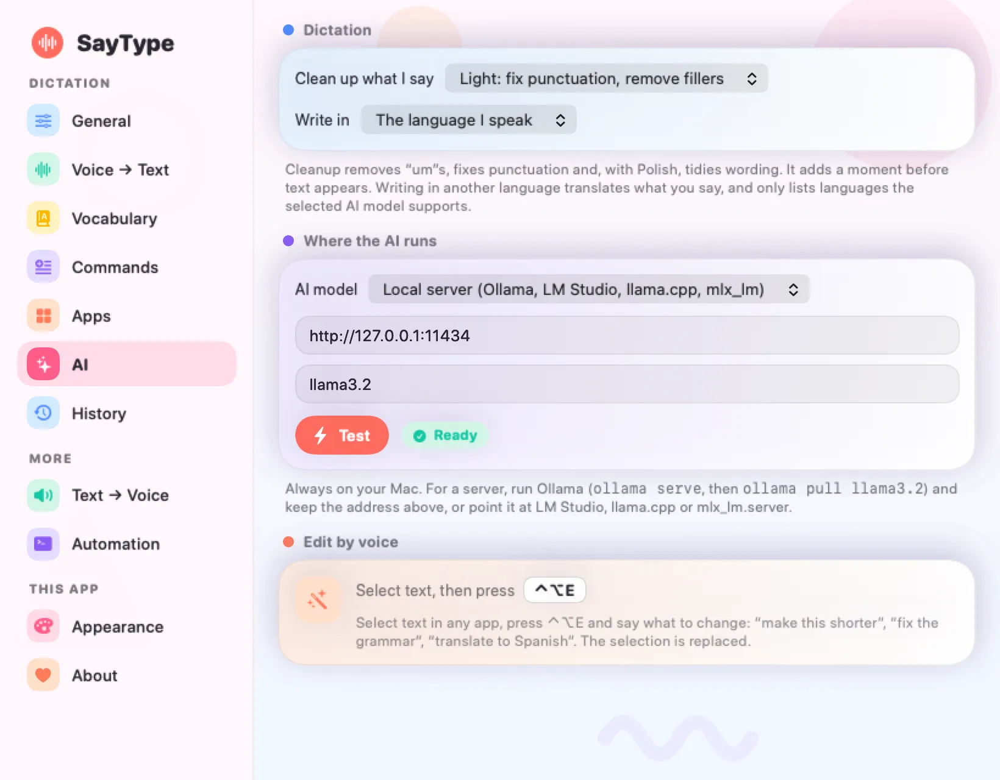
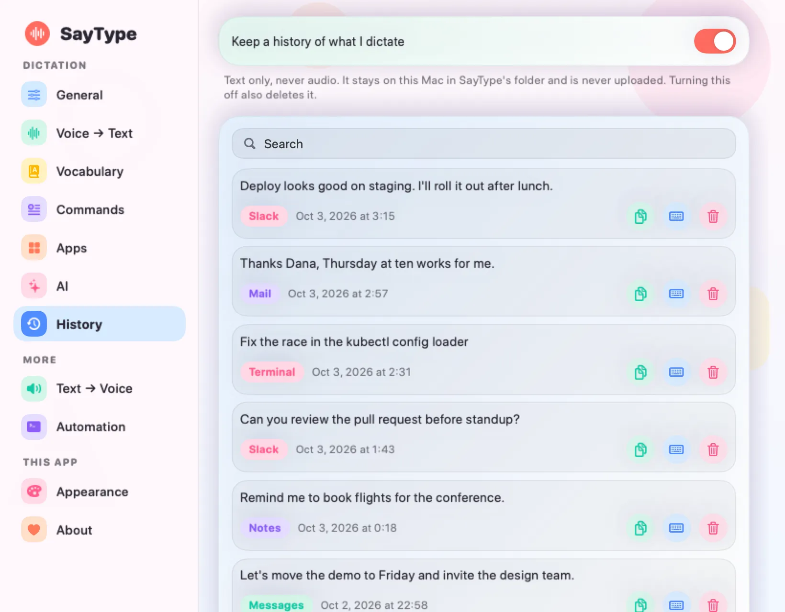
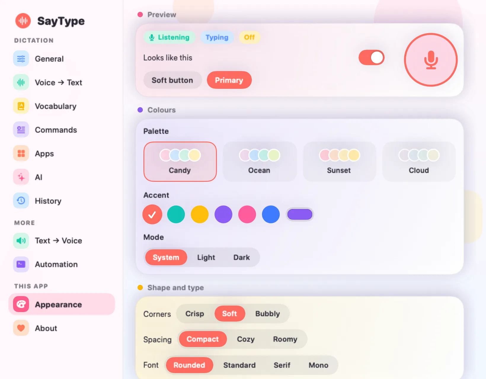
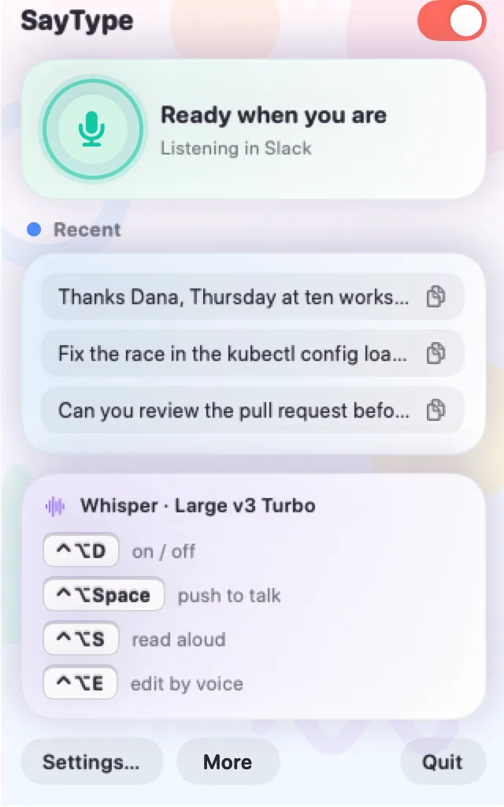

Click a text field. Just talk.
SayType is dictation for your Mac with no key to hold. It listens while a text field has focus, and when you pause, your words are typed right where your cursor is. It all runs on your Mac.
brew install --cask frugoman/tap/saytype
Free and open source. No trial, no account, no subscription. Signed and notarized by Apple. macOS 14 or later, Apple silicon recommended.
No button. Just a pause.
SayType watches which field has focus, the same way your screen reader would. The microphone only turns on when you could type something, and it's never on in password fields.
Click a field
Any app: Slack, Mail, your editor, a browser form.
Talk
It adapts to your room's noise, so a fan or a café doesn't trigger it.
Pause
After a short pause (0.8 s by default) the sentence is done.
It's typed
Inserted directly. Your clipboard is left alone.
A badge that follows your cursor.
A small mic sits next to the text cursor and shows what SayType is really doing, with a live level. If the microphone ever stops delivering audio, it turns orange, so you know before you start talking.
- ListeningReady when you are
- Hearing youThe ring swells with your voice
- TypingTurning speech into words
- PausedNot listening right now
- OffClick it to turn dictation back on
- Mic problemNo audio is arriving
It looks like this.
Calm pastel cards, a colour-coded sidebar and a menu-bar popover that tells you what it's doing. These are real screens, with sample data.








It learns your words.
Add project names and technical terms in Settings. Press Teach and say a word three times: SayType learns how it gets misheard and fixes it from then on.
| You said | Speech model heard | SayType types |
|---|---|---|
| kubectl | cube cuttle | kubectl |
| Next.js | next dot js | Next.js |
| Postgres | post gress | Postgres |
It talks back, too.
Read anything aloud
Select text in any app and press ⌃⌥S to hear it. Press again to stop. Use a macOS voice, or download a natural on-device voice.
⌃⌥D turns dictation on and off.
Bring your own model
Choose Whisper Large v3 Turbo or Parakeet v3, both running on your Mac. Prefer whisper.cpp or MLX? Run it as a local server and point SayType at it.
Twenty seconds.
The whole idea, start to finish.
Everything it does.
Hands-free is the default. Everything below is optional, and all of it runs on your Mac.
Three listening modes
Hands-free, push-to-talk (hold ⌃⌥Space, release to type) or toggle. A small recording pill shows when it's listening.
Transcript history
Search what you dictated, copy it, or type it again. Kept only on this Mac, the last 10 items by default (you choose how many). Turn it off or clear it any time.
Voice commands and snippets
Say "new line", "scratch that" or "press enter". Say a phrase to type a saved block, with the date, time or clipboard filled in.
Per-app profiles
Set pause length, language, tone and extra words for each app. Casual in Slack, literal in Terminal.
Local AI cleanup
Off by default. Removes filler words and fixes punctuation, using Apple's on-device model or a local server like Ollama.
Edit by voice
Select text, press ⌃⌥E and say "make this shorter" or "translate to Spanish". Needs the AI cleanup backend.
About 30 languages
Whisper and Parakeet v3 (25 European languages, very fast). Translate to English, or pick an output language.
Files and meetings
Transcribe any audio or video file and export it as text, subtitles or Markdown. Record a meeting with a summary and action items.
Automation
A command-line tool you can rename to anything (
alfred toggle),saytype://links, Shortcuts actions and Raycast scripts.A badge at your cursor
A small mic follows the text cursor and shows what SayType is really doing, with a live level. It turns orange if the microphone stops delivering audio.
Make it yours
Pastel palettes, your own accent colour, light or dark, rounder or sharper corners, any font style. Animations switch off with Reduce Motion.
Reads aloud, too
Select text in any app and press ⌃⌥S. Use a macOS voice or a natural on-device voice.
Setup for each is on the support page.
Make it yours.
Four palettes, any accent colour, light or dark, corners from crisp to bubbly. Try it on the right. It's all in Settings → Appearance.
How it compares.
There are good dictation apps out there. Here is where SayType fits, and where it doesn't.
| Feature | SayType | Handy | VoiceInk | Superwhisper | Wispr Flow | Spokenly |
|---|---|---|---|---|---|---|
| Price | Free | Free | $25 and up, once | Free tier, paid plans | Free tier, paid plan | Free local, Pro $9.99/mo |
| Open source | Yes | Yes | Yes | Not found on their site | Not found on their site | Not found on their site |
| Transcribes on your Mac | Yes | Yes | Yes | Yes | Not found on their site | Yes |
| Starts when you click a text field, no key | Yes | Not found on their site | Not found on their site | Not found on their site | Not found on their site | Not found on their site |
| Per-app profiles | Yes | Not found on their site | Yes | Yes | Yes | Not found on their site |
| AI cleanup | Yes | Not found on their site | Yes | Yes | Yes | Yes |
| Snippets and replacements | Yes | Not found on their site | Yes | Not found on their site | Yes | Yes |
| Meeting recording | Yes | Not found on their site | Not found on their site | Yes | Yes | Yes |
| Audio and video file transcription | Yes | Not found on their site | Not found on their site | Yes | Not found on their site | Yes |
| Reads text aloud | Yes | Not found on their site | Not found on their site | Not found on their site | Not found on their site | Not found on their site |
| Command line, links or Shortcuts | Yes | Yes | Not found on their site | Yes | Not found on their site | Yes |
| Languages | About 30 | Not found | Not found | 100+ | 100+ | 100+ |
| Platforms | Mac | Mac, Windows, Linux | Mac, iPhone | Mac, Windows, iPhone, Android | Mac, Windows, iPhone, Android | Mac, Windows, Linux, iPhone |
Taken from each app's own website and repository in October 2026. A dash means we didn't find it documented there, not that it's missing. Prices change. Found a mistake? Tell us and we'll fix it.
Pick SayType if
You're on a Mac and want dictation that starts by itself, runs entirely on your Mac, costs nothing and has source you can read.
Pick something else if
You need Windows, Linux or a phone (Handy, Superwhisper, Wispr Flow, Spokenly), or more than about 30 languages (Superwhisper, Wispr Flow, Spokenly).
Your voice stays on your Mac.
- Transcribed on-device. Audio is kept in memory just long enough to turn into text, then thrown away.
- Nothing to sign up for. No account, no server, no analytics. History and snippets stay in a folder on your Mac.
- Open source. The code is public under the MIT license, so you can check these claims yourself.
- One download. The speech model (about 630 MB) comes from Hugging Face once, the first time you open SayType. Parakeet is a separate download if you choose it.
Read the full privacy policy.
Free. Really.
No trial, no pro tier, no licence key. Download the app, or install it with Homebrew and update with brew upgrade --cask saytype. Homebrew also installs the saytype command for your terminal.
brew install --cask frugoman/tap/saytype
Open source under the MIT license. Read the code on GitHub.